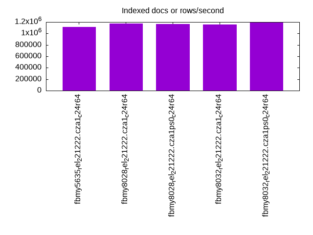

This is a report for the insert benchmark with 240M docs and 12 client(s). It is generated by scripts (bash, awk, sed) and Tufte might not be impressed. An overview of the insert benchmark is here and a short update is here. Below, by DBMS, I mean DBMS+version.config. An example is my8020.c10b40 where my means MySQL, 8020 is version 8.0.20 and c10b40 is the name for the configuration file.
The test server has 8 AMD cores, 32G RAM, Ubuntu 22.04, XFS and an NVMe SSD. The benchmark was run with 1 client and there were 1 or 3 connections per client (1 for queries or inserts without rate limits, 1+1 for rate limited inserts+deletes). It uses 1 table. It loads 20M rows per table without secondary indexes, creates 3 secondary indexes per table, then inserts 50m+50m rows per table with a delete per insert to avoid growing the table. It then does 6 read+write tests for 1200s each that do queries as fast as possible with 100,100,500,500,1000,1000 inserts/s and the same for deletes/s per client concurrent with the queries. The database is cached in memory. Clients and the DBMS share one server. The per-database configs are in the per-database subdirectories here.
The tested DBMS are:
The numbers are inserts/s for l.i0, l.i1 and l.i2, indexed docs (or rows) /s for l.x and queries/s for qr100, qp100 thru qr1000, qp1000" The values are the average rate over the entire test for inserts (IPS) and queries (QPS). The range of values for IPS and QPS is split into 3 parts: bottom 25%, middle 50%, top 25%. Values in the bottom 25% have a red background, values in the top 25% have a green background and values in the middle have no color. A gray background is used for values that can be ignored because the DBMS did not sustain the target insert rate. Red backgrounds are not used when the minimum value is within 80% of the max value.
| dbms | l.i0 | l.x | l.i1 | l.i2 | qr100 | qp100 | qr500 | qp500 | qr1000 | qp1000 |
|---|---|---|---|---|---|---|---|---|---|---|
| fbmy5635_rel_221222.cza1_c24r64 | 662983 | 1116280 | 37011 | 28436 | 26938 | 48115 | 27118 | 43996 | 25681 | 41805 |
| fbmy8028_rel_221222.cza1_c24r64 | 578313 | 1170732 | 37981 | 35693 | 31796 | 47687 | 29059 | 44034 | 29509 | 42390 |
| fbmy8028_rel_221222.cza1ps0_c24r64 | 589680 | 1165049 | 38083 | 34246 | 30515 | 49542 | 29556 | 45133 | 29401 | 43543 |
| fbmy8032_rel_221222.cza1_c24r64 | 555556 | 1153847 | 38138 | 35896 | 31243 | 46082 | 30700 | 42339 | 30277 | 40723 |
| fbmy8032_rel_221222.cza1ps0_c24r64 | 547945 | 1188119 | 38156 | 34712 | 30049 | 48479 | 31324 | 44545 | 31845 | 43170 |
This table has relative throughput, throughput for the DBMS relative to the DBMS in the first line, using the absolute throughput from the previous table. Values less than 0.95 have a yellow background. Values greater than 1.05 have a blue background.
| dbms | l.i0 | l.x | l.i1 | l.i2 | qr100 | qp100 | qr500 | qp500 | qr1000 | qp1000 |
|---|---|---|---|---|---|---|---|---|---|---|
| fbmy5635_rel_221222.cza1_c24r64 | 1.00 | 1.00 | 1.00 | 1.00 | 1.00 | 1.00 | 1.00 | 1.00 | 1.00 | 1.00 |
| fbmy8028_rel_221222.cza1_c24r64 | 0.87 | 1.05 | 1.03 | 1.26 | 1.18 | 0.99 | 1.07 | 1.00 | 1.15 | 1.01 |
| fbmy8028_rel_221222.cza1ps0_c24r64 | 0.89 | 1.04 | 1.03 | 1.20 | 1.13 | 1.03 | 1.09 | 1.03 | 1.14 | 1.04 |
| fbmy8032_rel_221222.cza1_c24r64 | 0.84 | 1.03 | 1.03 | 1.26 | 1.16 | 0.96 | 1.13 | 0.96 | 1.18 | 0.97 |
| fbmy8032_rel_221222.cza1ps0_c24r64 | 0.83 | 1.06 | 1.03 | 1.22 | 1.12 | 1.01 | 1.16 | 1.01 | 1.24 | 1.03 |
This lists the average rate of inserts/s for the tests that do inserts concurrent with queries. For such tests the query rate is listed in the table above. The read+write tests are setup so that the insert rate should match the target rate every second. Cells that are not at least 95% of the target have a red background to indicate a failure to satisfy the target.
| dbms | qr100.L1 | qp100.L2 | qr500.L3 | qp500.L4 | qr1000.L5 | qp1000.L6 |
|---|---|---|---|---|---|---|
| fbmy5635_rel_221222.cza1_c24r64 | 1187 | 1186 | 5936 | 5936 | 11871 | 11871 |
| fbmy8028_rel_221222.cza1_c24r64 | 1187 | 1187 | 5931 | 5931 | 11881 | 11881 |
| fbmy8028_rel_221222.cza1ps0_c24r64 | 1187 | 1186 | 5936 | 5936 | 11871 | 11881 |
| fbmy8032_rel_221222.cza1_c24r64 | 1187 | 1186 | 5936 | 5931 | 11871 | 11881 |
| fbmy8032_rel_221222.cza1ps0_c24r64 | 1186 | 1187 | 5931 | 5936 | 11881 | 11871 |
| target | 1200 | 1200 | 6000 | 6000 | 12000 | 12000 |
l.i0: load without secondary indexes. Graphs for performance per 1-second interval are here.
Average throughput:
Insert response time histogram: each cell has the percentage of responses that take <= the time in the header and max is the max response time in seconds. For the max column values in the top 25% of the range have a red background and in the bottom 25% of the range have a green background. The red background is not used when the min value is within 80% of the max value.
| dbms | 256us | 1ms | 4ms | 16ms | 64ms | 256ms | 1s | 4s | 16s | gt | max |
|---|---|---|---|---|---|---|---|---|---|---|---|
| fbmy5635_rel_221222.cza1_c24r64 | 3.121 | 96.775 | 0.080 | 0.003 | 0.021 | 0.214 | |||||
| fbmy8028_rel_221222.cza1_c24r64 | 0.201 | 98.952 | 0.798 | 0.024 | 0.024 | 0.210 | |||||
| fbmy8028_rel_221222.cza1ps0_c24r64 | 0.384 | 98.822 | 0.742 | 0.027 | 0.025 | 0.193 | |||||
| fbmy8032_rel_221222.cza1_c24r64 | 0.044 | 99.076 | 0.831 | 0.026 | 0.022 | 0.197 | |||||
| fbmy8032_rel_221222.cza1ps0_c24r64 | 0.208 | 98.807 | 0.930 | 0.032 | 0.023 | 0.001 | 0.265 |
Performance metrics for the DBMS listed above. Some are normalized by throughput, others are not. Legend for results is here.
ips qps rps rmbps wps wmbps rpq rkbpq wpi wkbpi csps cpups cspq cpupq dbgb1 dbgb2 rss maxop p50 p99 tag 662983 0 0 0.0 750.6 243.3 0.000 0.000 0.001 0.376 123339 68.2 0.186 25 7.0 7.5 1.9 0.214 58836 42053 fbmy5635_rel_221222.cza1_c24r64 578313 0 0 0.0 534.6 215.0 0.000 0.000 0.001 0.381 93408 68.0 0.162 28 7.0 7.7 2.4 0.210 52060 38558 fbmy8028_rel_221222.cza1_c24r64 589680 0 0 0.0 544.2 220.4 0.000 0.000 0.001 0.383 97571 68.3 0.165 28 6.9 7.7 2.1 0.193 51744 39356 fbmy8028_rel_221222.cza1ps0_c24r64 555556 0 0 0.0 510.1 204.8 0.000 0.000 0.001 0.377 88742 67.5 0.160 29 7.0 7.7 2.4 0.197 48852 35461 fbmy8032_rel_221222.cza1_c24r64 547945 0 0 0.0 548.0 222.5 0.000 0.000 0.001 0.416 96154 68.6 0.175 30 7.1 7.9 2.2 0.265 49048 34862 fbmy8032_rel_221222.cza1ps0_c24r64
l.x: create secondary indexes.
Average throughput:
Performance metrics for the DBMS listed above. Some are normalized by throughput, others are not. Legend for results is here.
ips qps rps rmbps wps wmbps rpq rkbpq wpi wkbpi csps cpups cspq cpupq dbgb1 dbgb2 rss maxop p50 p99 tag 1116280 0 2 0.2 568.0 173.8 0.000 0.000 0.001 0.159 2396 44.3 0.002 10 15.7 16.2 16.8 0.005 NA NA fbmy5635_rel_221222.cza1_c24r64 1170732 0 2 0.2 434.5 182.2 0.000 0.000 0.000 0.159 3177 45.0 0.003 9 15.6 16.4 19.6 0.007 NA NA fbmy8028_rel_221222.cza1_c24r64 1165049 0 2 0.2 433.2 182.0 0.000 0.000 0.000 0.160 3292 45.7 0.003 9 15.6 16.4 19.2 0.011 NA NA fbmy8028_rel_221222.cza1ps0_c24r64 1153847 0 2 0.2 430.6 181.6 0.000 0.000 0.000 0.161 3927 46.0 0.003 10 15.6 16.4 19.5 0.010 NA NA fbmy8032_rel_221222.cza1_c24r64 1188119 0 2 0.2 441.7 186.6 0.000 0.000 0.000 0.161 4033 46.2 0.003 9 15.6 16.4 19.4 0.006 NA NA fbmy8032_rel_221222.cza1ps0_c24r64
l.i1: continue load after secondary indexes created with 50 inserts per transaction. Graphs for performance per 1-second interval are here.
Average throughput:
Insert response time histogram: each cell has the percentage of responses that take <= the time in the header and max is the max response time in seconds. For the max column values in the top 25% of the range have a red background and in the bottom 25% of the range have a green background. The red background is not used when the min value is within 80% of the max value.
| dbms | 256us | 1ms | 4ms | 16ms | 64ms | 256ms | 1s | 4s | 16s | gt | max |
|---|---|---|---|---|---|---|---|---|---|---|---|
| fbmy5635_rel_221222.cza1_c24r64 | nonzero | 0.069 | 38.817 | 61.113 | nonzero | 0.072 | |||||
| fbmy8028_rel_221222.cza1_c24r64 | 0.060 | 47.165 | 52.773 | 0.001 | 0.122 | ||||||
| fbmy8028_rel_221222.cza1ps0_c24r64 | 0.057 | 48.245 | 51.697 | 0.001 | 0.231 | ||||||
| fbmy8032_rel_221222.cza1_c24r64 | 0.070 | 48.654 | 51.274 | 0.001 | nonzero | 1.309 | |||||
| fbmy8032_rel_221222.cza1ps0_c24r64 | nonzero | 0.065 | 48.325 | 51.609 | 0.001 | 0.140 |
Delete response time histogram: each cell has the percentage of responses that take <= the time in the header and max is the max response time in seconds. For the max column values in the top 25% of the range have a red background and in the bottom 25% of the range have a green background. The red background is not used when the min value is within 80% of the max value.
| dbms | 256us | 1ms | 4ms | 16ms | 64ms | 256ms | 1s | 4s | 16s | gt | max |
|---|---|---|---|---|---|---|---|---|---|---|---|
| fbmy5635_rel_221222.cza1_c24r64 | 0.069 | 54.736 | 45.191 | 0.004 | 0.192 | ||||||
| fbmy8028_rel_221222.cza1_c24r64 | 0.097 | 49.856 | 50.045 | 0.002 | 0.130 | ||||||
| fbmy8028_rel_221222.cza1ps0_c24r64 | 0.092 | 50.953 | 48.952 | 0.003 | 0.231 | ||||||
| fbmy8032_rel_221222.cza1_c24r64 | 0.102 | 50.819 | 49.076 | 0.003 | nonzero | 1.307 | |||||
| fbmy8032_rel_221222.cza1ps0_c24r64 | 0.101 | 50.725 | 49.171 | 0.002 | 0.203 |
Performance metrics for the DBMS listed above. Some are normalized by throughput, others are not. Legend for results is here.
ips qps rps rmbps wps wmbps rpq rkbpq wpi wkbpi csps cpups cspq cpupq dbgb1 dbgb2 rss maxop p50 p99 tag 37011 0 1540 8.5 325.6 107.8 0.042 0.235 0.009 2.983 34412 33.6 0.930 218 18.4 19.0 44.9 0.072 3096 2647 fbmy5635_rel_221222.cza1_c24r64 37981 0 1610 9.2 285.0 112.0 0.042 0.248 0.008 3.020 32149 38.0 0.846 240 18.1 18.9 47.0 0.122 3148 2697 fbmy8028_rel_221222.cza1_c24r64 38083 0 1614 9.2 286.0 112.5 0.042 0.248 0.008 3.024 32612 37.6 0.856 237 18.3 19.1 46.3 0.231 3196 2647 fbmy8028_rel_221222.cza1ps0_c24r64 38138 0 1731 9.9 292.6 115.1 0.045 0.266 0.008 3.089 32153 39.2 0.843 247 17.9 18.7 46.5 1.309 3196 2647 fbmy8032_rel_221222.cza1_c24r64 38156 0 1670 9.6 284.1 111.8 0.044 0.258 0.007 2.999 31985 39.3 0.838 247 18.0 18.8 46.7 0.140 3196 2647 fbmy8032_rel_221222.cza1ps0_c24r64
l.i2: continue load after secondary indexes created with 5 inserts per transaction. Graphs for performance per 1-second interval are here.
Average throughput:
Insert response time histogram: each cell has the percentage of responses that take <= the time in the header and max is the max response time in seconds. For the max column values in the top 25% of the range have a red background and in the bottom 25% of the range have a green background. The red background is not used when the min value is within 80% of the max value.
| dbms | 256us | 1ms | 4ms | 16ms | 64ms | 256ms | 1s | 4s | 16s | gt | max |
|---|---|---|---|---|---|---|---|---|---|---|---|
| fbmy5635_rel_221222.cza1_c24r64 | 0.012 | 3.606 | 96.329 | 0.049 | 0.004 | nonzero | 0.095 | ||||
| fbmy8028_rel_221222.cza1_c24r64 | 5.874 | 94.028 | 0.088 | 0.010 | nonzero | 0.147 | |||||
| fbmy8028_rel_221222.cza1ps0_c24r64 | 5.044 | 94.847 | 0.099 | 0.010 | nonzero | 0.118 | |||||
| fbmy8032_rel_221222.cza1_c24r64 | 5.998 | 93.908 | 0.086 | 0.009 | nonzero | 0.094 | |||||
| fbmy8032_rel_221222.cza1ps0_c24r64 | 5.281 | 94.590 | 0.119 | 0.010 | nonzero | 0.066 |
Delete response time histogram: each cell has the percentage of responses that take <= the time in the header and max is the max response time in seconds. For the max column values in the top 25% of the range have a red background and in the bottom 25% of the range have a green background. The red background is not used when the min value is within 80% of the max value.
| dbms | 256us | 1ms | 4ms | 16ms | 64ms | 256ms | 1s | 4s | 16s | gt | max |
|---|---|---|---|---|---|---|---|---|---|---|---|
| fbmy5635_rel_221222.cza1_c24r64 | 0.001 | 2.592 | 97.302 | 0.099 | 0.006 | 0.001 | 0.100 | ||||
| fbmy8028_rel_221222.cza1_c24r64 | 3.846 | 96.038 | 0.106 | 0.010 | nonzero | 0.155 | |||||
| fbmy8028_rel_221222.cza1ps0_c24r64 | 3.292 | 96.569 | 0.128 | 0.011 | nonzero | 0.148 | |||||
| fbmy8032_rel_221222.cza1_c24r64 | 3.922 | 95.965 | 0.103 | 0.009 | nonzero | 0.092 | |||||
| fbmy8032_rel_221222.cza1ps0_c24r64 | 3.480 | 96.361 | 0.148 | 0.011 | nonzero | 0.098 |
Performance metrics for the DBMS listed above. Some are normalized by throughput, others are not. Legend for results is here.
ips qps rps rmbps wps wmbps rpq rkbpq wpi wkbpi csps cpups cspq cpupq dbgb1 dbgb2 rss maxop p50 p99 tag 28436 0 1746 9.5 254.3 84.6 0.061 0.344 0.009 3.048 196168 47.9 6.899 404 19.7 19.8 44.3 0.095 2382 1688 fbmy5635_rel_221222.cza1_c24r64 35693 0 2411 13.7 299.8 112.2 0.068 0.394 0.008 3.219 244071 53.4 6.838 359 18.0 18.3 44.4 0.147 3018 2163 fbmy8028_rel_221222.cza1_c24r64 34246 0 2346 13.4 288.3 107.1 0.069 0.400 0.008 3.204 233202 52.6 6.810 369 17.9 18.2 44.5 0.118 2897 2043 fbmy8028_rel_221222.cza1ps0_c24r64 35896 0 2351 13.4 299.1 110.5 0.066 0.382 0.008 3.153 245912 53.3 6.851 356 18.2 18.5 44.5 0.094 3022 2202 fbmy8032_rel_221222.cza1_c24r64 34712 0 2289 13.0 290.0 106.9 0.066 0.385 0.008 3.154 234333 53.2 6.751 368 19.2 19.5 44.8 0.066 2928 2053 fbmy8032_rel_221222.cza1ps0_c24r64
qr100.L1: range queries with 100 insert/s per client. Graphs for performance per 1-second interval are here.
Average throughput:
Query response time histogram: each cell has the percentage of responses that take <= the time in the header and max is the max response time in seconds. For max values in the top 25% of the range have a red background and in the bottom 25% of the range have a green background. The red background is not used when the min value is within 80% of the max value.
| dbms | 256us | 1ms | 4ms | 16ms | 64ms | 256ms | 1s | 4s | 16s | gt | max |
|---|---|---|---|---|---|---|---|---|---|---|---|
| fbmy5635_rel_221222.cza1_c24r64 | 62.007 | 27.478 | 10.514 | nonzero | nonzero | nonzero | 0.083 | ||||
| fbmy8028_rel_221222.cza1_c24r64 | 64.531 | 31.165 | 4.303 | nonzero | nonzero | nonzero | 0.104 | ||||
| fbmy8028_rel_221222.cza1ps0_c24r64 | 64.787 | 28.566 | 6.646 | nonzero | nonzero | nonzero | 0.071 | ||||
| fbmy8032_rel_221222.cza1_c24r64 | 65.488 | 29.424 | 5.087 | nonzero | nonzero | nonzero | 0.093 | ||||
| fbmy8032_rel_221222.cza1ps0_c24r64 | 66.184 | 26.193 | 7.622 | nonzero | nonzero | nonzero | 0.113 |
Insert response time histogram: each cell has the percentage of responses that take <= the time in the header and max is the max response time in seconds. For max values in the top 25% of the range have a red background and in the bottom 25% of the range have a green background. The red background is not used when the min value is within 80% of the max value.
| dbms | 256us | 1ms | 4ms | 16ms | 64ms | 256ms | 1s | 4s | 16s | gt | max |
|---|---|---|---|---|---|---|---|---|---|---|---|
| fbmy5635_rel_221222.cza1_c24r64 | 0.632 | 91.851 | 7.503 | 0.014 | 0.024 | ||||||
| fbmy8028_rel_221222.cza1_c24r64 | 96.087 | 3.910 | 0.003 | 0.028 | |||||||
| fbmy8028_rel_221222.cza1ps0_c24r64 | 0.003 | 95.556 | 4.441 | 0.007 | |||||||
| fbmy8032_rel_221222.cza1_c24r64 | 95.382 | 4.618 | 0.008 | ||||||||
| fbmy8032_rel_221222.cza1ps0_c24r64 | 96.351 | 3.649 | 0.008 |
Delete response time histogram: each cell has the percentage of responses that take <= the time in the header and max is the max response time in seconds. For max values in the top 25% of the range have a red background and in the bottom 25% of the range have a green background. The red background is not used when the min value is within 80% of the max value.
| dbms | 256us | 1ms | 4ms | 16ms | 64ms | 256ms | 1s | 4s | 16s | gt | max |
|---|---|---|---|---|---|---|---|---|---|---|---|
| fbmy5635_rel_221222.cza1_c24r64 | 1.753 | 92.062 | 6.167 | 0.017 | 0.053 | ||||||
| fbmy8028_rel_221222.cza1_c24r64 | 0.163 | 98.219 | 1.615 | 0.003 | 0.024 | ||||||
| fbmy8028_rel_221222.cza1ps0_c24r64 | 0.413 | 97.219 | 2.368 | 0.008 | |||||||
| fbmy8032_rel_221222.cza1_c24r64 | 0.017 | 97.632 | 2.347 | 0.003 | 0.141 | ||||||
| fbmy8032_rel_221222.cza1ps0_c24r64 | 0.122 | 98.128 | 1.747 | 0.003 | 0.025 |
Performance metrics for the DBMS listed above. Some are normalized by throughput, others are not. Legend for results is here.
ips qps rps rmbps wps wmbps rpq rkbpq wpi wkbpi csps cpups cspq cpupq dbgb1 dbgb2 rss maxop p50 p99 tag 1187 26938 57 0.3 22.2 6.4 0.002 0.013 0.019 5.514 105453 49.3 3.915 439 17.4 17.7 44.5 0.083 2366 2030 fbmy5635_rel_221222.cza1_c24r64 1187 31796 102 0.6 26.4 9.0 0.003 0.019 0.022 7.742 124227 50.5 3.907 381 17.4 17.9 44.9 0.104 2222 1966 fbmy8028_rel_221222.cza1_c24r64 1187 30515 61 0.4 22.2 7.1 0.002 0.013 0.019 6.099 119150 49.5 3.905 389 17.4 17.9 44.8 0.071 3308 3038 fbmy8028_rel_221222.cza1ps0_c24r64 1187 31243 106 0.6 24.5 8.1 0.003 0.021 0.021 7.023 122029 50.3 3.906 386 17.3 17.8 44.9 0.093 2301 1982 fbmy8032_rel_221222.cza1_c24r64 1186 30049 96 0.6 26.4 9.1 0.003 0.021 0.022 7.855 117646 49.6 3.915 396 17.4 17.9 45.3 0.113 2047 1759 fbmy8032_rel_221222.cza1ps0_c24r64
qp100.L2: point queries with 100 insert/s per client. Graphs for performance per 1-second interval are here.
Average throughput:
Query response time histogram: each cell has the percentage of responses that take <= the time in the header and max is the max response time in seconds. For max values in the top 25% of the range have a red background and in the bottom 25% of the range have a green background. The red background is not used when the min value is within 80% of the max value.
| dbms | 256us | 1ms | 4ms | 16ms | 64ms | 256ms | 1s | 4s | 16s | gt | max |
|---|---|---|---|---|---|---|---|---|---|---|---|
| fbmy5635_rel_221222.cza1_c24r64 | 84.447 | 15.490 | 0.060 | 0.004 | nonzero | 0.027 | |||||
| fbmy8028_rel_221222.cza1_c24r64 | 83.835 | 16.092 | 0.065 | 0.007 | 0.001 | 0.044 | |||||
| fbmy8028_rel_221222.cza1ps0_c24r64 | 88.387 | 11.555 | 0.052 | 0.006 | 0.001 | 0.036 | |||||
| fbmy8032_rel_221222.cza1_c24r64 | 78.631 | 21.293 | 0.065 | 0.010 | 0.001 | 0.064 | |||||
| fbmy8032_rel_221222.cza1ps0_c24r64 | 86.001 | 13.920 | 0.068 | 0.009 | 0.001 | 0.056 |
Insert response time histogram: each cell has the percentage of responses that take <= the time in the header and max is the max response time in seconds. For max values in the top 25% of the range have a red background and in the bottom 25% of the range have a green background. The red background is not used when the min value is within 80% of the max value.
| dbms | 256us | 1ms | 4ms | 16ms | 64ms | 256ms | 1s | 4s | 16s | gt | max |
|---|---|---|---|---|---|---|---|---|---|---|---|
| fbmy5635_rel_221222.cza1_c24r64 | 0.892 | 98.590 | 0.486 | 0.031 | 0.058 | ||||||
| fbmy8028_rel_221222.cza1_c24r64 | 93.260 | 6.733 | 0.007 | 0.017 | |||||||
| fbmy8028_rel_221222.cza1ps0_c24r64 | 99.542 | 0.451 | 0.007 | 0.025 | |||||||
| fbmy8032_rel_221222.cza1_c24r64 | 91.503 | 8.483 | 0.014 | 0.053 | |||||||
| fbmy8032_rel_221222.cza1ps0_c24r64 | 98.434 | 1.559 | 0.007 | 0.020 |
Delete response time histogram: each cell has the percentage of responses that take <= the time in the header and max is the max response time in seconds. For max values in the top 25% of the range have a red background and in the bottom 25% of the range have a green background. The red background is not used when the min value is within 80% of the max value.
| dbms | 256us | 1ms | 4ms | 16ms | 64ms | 256ms | 1s | 4s | 16s | gt | max |
|---|---|---|---|---|---|---|---|---|---|---|---|
| fbmy5635_rel_221222.cza1_c24r64 | 3.368 | 96.306 | 0.292 | 0.035 | 0.057 | ||||||
| fbmy8028_rel_221222.cza1_c24r64 | 0.472 | 94.524 | 5.003 | 0.014 | |||||||
| fbmy8028_rel_221222.cza1ps0_c24r64 | 1.649 | 98.073 | 0.274 | 0.003 | 0.019 | ||||||
| fbmy8032_rel_221222.cza1_c24r64 | 0.003 | 92.944 | 7.045 | 0.007 | 0.025 | ||||||
| fbmy8032_rel_221222.cza1ps0_c24r64 | 0.090 | 98.889 | 1.014 | 0.007 | 0.020 |
Performance metrics for the DBMS listed above. Some are normalized by throughput, others are not. Legend for results is here.
ips qps rps rmbps wps wmbps rpq rkbpq wpi wkbpi csps cpups cspq cpupq dbgb1 dbgb2 rss maxop p50 p99 tag 1186 48115 902 5.4 29.3 8.9 0.019 0.116 0.025 7.710 215474 49.8 4.478 248 17.4 18.0 48.3 0.027 4123 1407 fbmy5635_rel_221222.cza1_c24r64 1187 47687 929 6.1 29.8 10.4 0.019 0.131 0.025 8.934 214451 50.4 4.497 254 17.4 18.2 48.8 0.044 4139 1454 fbmy8028_rel_221222.cza1_c24r64 1186 49542 950 6.2 26.9 9.1 0.019 0.129 0.023 7.875 222181 49.6 4.485 240 17.4 18.2 48.9 0.036 4267 1566 fbmy8028_rel_221222.cza1ps0_c24r64 1186 46082 871 5.6 27.9 9.5 0.019 0.124 0.024 8.214 206625 50.1 4.484 261 17.4 18.2 48.7 0.064 3980 1294 fbmy8032_rel_221222.cza1_c24r64 1187 48479 949 6.3 29.5 10.0 0.020 0.132 0.025 8.638 220739 49.7 4.553 246 17.4 18.2 49.1 0.056 4203 1231 fbmy8032_rel_221222.cza1ps0_c24r64
qr500.L3: range queries with 500 insert/s per client. Graphs for performance per 1-second interval are here.
Average throughput:
Query response time histogram: each cell has the percentage of responses that take <= the time in the header and max is the max response time in seconds. For max values in the top 25% of the range have a red background and in the bottom 25% of the range have a green background. The red background is not used when the min value is within 80% of the max value.
| dbms | 256us | 1ms | 4ms | 16ms | 64ms | 256ms | 1s | 4s | 16s | gt | max |
|---|---|---|---|---|---|---|---|---|---|---|---|
| fbmy5635_rel_221222.cza1_c24r64 | 60.881 | 28.884 | 10.229 | 0.004 | 0.002 | nonzero | 0.192 | ||||
| fbmy8028_rel_221222.cza1_c24r64 | 60.511 | 32.950 | 6.535 | 0.002 | 0.002 | nonzero | 0.178 | ||||
| fbmy8028_rel_221222.cza1ps0_c24r64 | 63.204 | 30.806 | 5.985 | 0.002 | 0.002 | nonzero | 0.172 | ||||
| fbmy8032_rel_221222.cza1_c24r64 | 64.715 | 29.391 | 5.891 | 0.002 | 0.002 | nonzero | 0.172 | ||||
| fbmy8032_rel_221222.cza1ps0_c24r64 | 65.700 | 27.428 | 6.869 | 0.002 | 0.002 | nonzero | 0.149 |
Insert response time histogram: each cell has the percentage of responses that take <= the time in the header and max is the max response time in seconds. For max values in the top 25% of the range have a red background and in the bottom 25% of the range have a green background. The red background is not used when the min value is within 80% of the max value.
| dbms | 256us | 1ms | 4ms | 16ms | 64ms | 256ms | 1s | 4s | 16s | gt | max |
|---|---|---|---|---|---|---|---|---|---|---|---|
| fbmy5635_rel_221222.cza1_c24r64 | 0.618 | 20.858 | 77.487 | 1.037 | 0.044 | ||||||
| fbmy8028_rel_221222.cza1_c24r64 | 21.370 | 77.947 | 0.683 | 0.028 | |||||||
| fbmy8028_rel_221222.cza1ps0_c24r64 | 28.217 | 71.369 | 0.415 | 0.032 | |||||||
| fbmy8032_rel_221222.cza1_c24r64 | 26.165 | 73.456 | 0.380 | 0.028 | |||||||
| fbmy8032_rel_221222.cza1ps0_c24r64 | 17.040 | 81.868 | 1.092 | 0.038 |
Delete response time histogram: each cell has the percentage of responses that take <= the time in the header and max is the max response time in seconds. For max values in the top 25% of the range have a red background and in the bottom 25% of the range have a green background. The red background is not used when the min value is within 80% of the max value.
| dbms | 256us | 1ms | 4ms | 16ms | 64ms | 256ms | 1s | 4s | 16s | gt | max |
|---|---|---|---|---|---|---|---|---|---|---|---|
| fbmy5635_rel_221222.cza1_c24r64 | 1.484 | 20.892 | 76.658 | 0.966 | 0.042 | ||||||
| fbmy8028_rel_221222.cza1_c24r64 | 0.008 | 22.894 | 76.453 | 0.643 | 0.001 | 0.191 | |||||
| fbmy8028_rel_221222.cza1ps0_c24r64 | 0.045 | 30.321 | 69.229 | 0.405 | 0.028 | ||||||
| fbmy8032_rel_221222.cza1_c24r64 | 27.961 | 71.671 | 0.367 | 0.001 | 0.140 | ||||||
| fbmy8032_rel_221222.cza1ps0_c24r64 | 0.001 | 18.182 | 80.781 | 1.036 | 0.036 |
Performance metrics for the DBMS listed above. Some are normalized by throughput, others are not. Legend for results is here.
ips qps rps rmbps wps wmbps rpq rkbpq wpi wkbpi csps cpups cspq cpupq dbgb1 dbgb2 rss maxop p50 p99 tag 5936 27118 446 2.7 139.6 45.3 0.016 0.103 0.024 7.815 110162 54.4 4.062 481 18.4 18.7 47.0 0.192 2397 1903 fbmy5635_rel_221222.cza1_c24r64 5931 29059 487 3.1 116.5 45.7 0.017 0.108 0.020 7.889 118153 55.0 4.066 454 17.4 17.8 49.4 0.178 2829 2205 fbmy8028_rel_221222.cza1_c24r64 5936 29556 463 3.0 117.5 45.4 0.016 0.103 0.020 7.830 120046 54.6 4.062 443 18.2 18.6 48.2 0.172 2733 2254 fbmy8028_rel_221222.cza1ps0_c24r64 5936 30700 466 3.0 118.5 45.1 0.015 0.099 0.020 7.786 123845 54.9 4.034 429 17.6 18.0 48.7 0.172 2637 1822 fbmy8032_rel_221222.cza1_c24r64 5931 31324 475 3.0 108.0 41.2 0.015 0.098 0.018 7.110 126192 54.9 4.029 421 17.5 17.9 48.0 0.149 2621 1663 fbmy8032_rel_221222.cza1ps0_c24r64
qp500.L4: point queries with 500 insert/s per client. Graphs for performance per 1-second interval are here.
Average throughput:
Query response time histogram: each cell has the percentage of responses that take <= the time in the header and max is the max response time in seconds. For max values in the top 25% of the range have a red background and in the bottom 25% of the range have a green background. The red background is not used when the min value is within 80% of the max value.
| dbms | 256us | 1ms | 4ms | 16ms | 64ms | 256ms | 1s | 4s | 16s | gt | max |
|---|---|---|---|---|---|---|---|---|---|---|---|
| fbmy5635_rel_221222.cza1_c24r64 | 58.894 | 41.087 | 0.019 | nonzero | nonzero | 0.032 | |||||
| fbmy8028_rel_221222.cza1_c24r64 | 59.199 | 40.788 | 0.012 | nonzero | 0.011 | ||||||
| fbmy8028_rel_221222.cza1ps0_c24r64 | 67.994 | 31.981 | 0.024 | 0.001 | nonzero | 0.016 | |||||
| fbmy8032_rel_221222.cza1_c24r64 | 46.125 | 53.838 | 0.036 | 0.001 | 0.012 | ||||||
| fbmy8032_rel_221222.cza1ps0_c24r64 | 63.853 | 36.124 | 0.023 | nonzero | nonzero | 0.020 |
Insert response time histogram: each cell has the percentage of responses that take <= the time in the header and max is the max response time in seconds. For max values in the top 25% of the range have a red background and in the bottom 25% of the range have a green background. The red background is not used when the min value is within 80% of the max value.
| dbms | 256us | 1ms | 4ms | 16ms | 64ms | 256ms | 1s | 4s | 16s | gt | max |
|---|---|---|---|---|---|---|---|---|---|---|---|
| fbmy5635_rel_221222.cza1_c24r64 | 0.022 | 41.058 | 58.891 | 0.029 | 0.020 | ||||||
| fbmy8028_rel_221222.cza1_c24r64 | 84.597 | 15.396 | 0.008 | 0.019 | |||||||
| fbmy8028_rel_221222.cza1ps0_c24r64 | 36.962 | 62.979 | 0.058 | 0.028 | |||||||
| fbmy8032_rel_221222.cza1_c24r64 | 32.511 | 67.451 | 0.037 | 0.025 | |||||||
| fbmy8032_rel_221222.cza1ps0_c24r64 | 56.320 | 43.652 | 0.028 | 0.054 |
Delete response time histogram: each cell has the percentage of responses that take <= the time in the header and max is the max response time in seconds. For max values in the top 25% of the range have a red background and in the bottom 25% of the range have a green background. The red background is not used when the min value is within 80% of the max value.
| dbms | 256us | 1ms | 4ms | 16ms | 64ms | 256ms | 1s | 4s | 16s | gt | max |
|---|---|---|---|---|---|---|---|---|---|---|---|
| fbmy5635_rel_221222.cza1_c24r64 | 0.264 | 43.710 | 55.992 | 0.033 | 0.001 | 0.165 | |||||
| fbmy8028_rel_221222.cza1_c24r64 | 0.103 | 86.186 | 13.701 | 0.008 | 0.001 | 0.137 | |||||
| fbmy8028_rel_221222.cza1ps0_c24r64 | 0.016 | 39.678 | 60.251 | 0.055 | 0.030 | ||||||
| fbmy8032_rel_221222.cza1_c24r64 | 34.455 | 65.515 | 0.028 | 0.001 | 0.161 | ||||||
| fbmy8032_rel_221222.cza1ps0_c24r64 | 0.010 | 58.433 | 41.530 | 0.028 | 0.051 |
Performance metrics for the DBMS listed above. Some are normalized by throughput, others are not. Legend for results is here.
ips qps rps rmbps wps wmbps rpq rkbpq wpi wkbpi csps cpups cspq cpupq dbgb1 dbgb2 rss maxop p50 p99 tag 5936 43996 494 2.9 140.9 46.8 0.011 0.067 0.024 8.068 253586 54.3 5.764 296 17.4 19.3 47.3 0.032 3660 3326 fbmy5635_rel_221222.cza1_c24r64 5931 44034 474 2.7 124.2 47.1 0.011 0.064 0.021 8.124 243869 54.9 5.538 299 17.4 19.4 49.1 0.011 3660 3181 fbmy8028_rel_221222.cza1_c24r64 5936 45133 502 2.9 123.4 47.0 0.011 0.067 0.021 8.106 258461 54.4 5.727 289 17.4 19.4 48.6 0.016 3741 3244 fbmy8028_rel_221222.cza1ps0_c24r64 5931 42339 496 2.9 124.8 47.9 0.012 0.071 0.021 8.263 233708 55.1 5.520 312 17.6 19.6 49.3 0.012 3532 3149 fbmy8032_rel_221222.cza1_c24r64 5936 44545 495 2.9 112.1 42.9 0.011 0.067 0.019 7.408 254790 54.6 5.720 294 18.0 20.0 48.8 0.020 3740 3324 fbmy8032_rel_221222.cza1ps0_c24r64
qr1000.L5: range queries with 1000 insert/s per client. Graphs for performance per 1-second interval are here.
Average throughput:
Query response time histogram: each cell has the percentage of responses that take <= the time in the header and max is the max response time in seconds. For max values in the top 25% of the range have a red background and in the bottom 25% of the range have a green background. The red background is not used when the min value is within 80% of the max value.
| dbms | 256us | 1ms | 4ms | 16ms | 64ms | 256ms | 1s | 4s | 16s | gt | max |
|---|---|---|---|---|---|---|---|---|---|---|---|
| fbmy5635_rel_221222.cza1_c24r64 | 57.686 | 30.007 | 12.304 | 0.002 | nonzero | nonzero | 0.163 | ||||
| fbmy8028_rel_221222.cza1_c24r64 | 58.648 | 35.765 | 5.585 | 0.002 | nonzero | nonzero | 0.108 | ||||
| fbmy8028_rel_221222.cza1ps0_c24r64 | 61.536 | 31.810 | 6.652 | 0.002 | nonzero | nonzero | 0.136 | ||||
| fbmy8032_rel_221222.cza1_c24r64 | 63.261 | 30.695 | 6.042 | 0.002 | nonzero | nonzero | 0.103 | ||||
| fbmy8032_rel_221222.cza1ps0_c24r64 | 65.191 | 29.945 | 4.862 | 0.001 | nonzero | nonzero | 0.158 |
Insert response time histogram: each cell has the percentage of responses that take <= the time in the header and max is the max response time in seconds. For max values in the top 25% of the range have a red background and in the bottom 25% of the range have a green background. The red background is not used when the min value is within 80% of the max value.
| dbms | 256us | 1ms | 4ms | 16ms | 64ms | 256ms | 1s | 4s | 16s | gt | max |
|---|---|---|---|---|---|---|---|---|---|---|---|
| fbmy5635_rel_221222.cza1_c24r64 | 0.017 | 10.484 | 87.255 | 2.244 | 0.050 | ||||||
| fbmy8028_rel_221222.cza1_c24r64 | 14.127 | 85.089 | 0.784 | 0.049 | |||||||
| fbmy8028_rel_221222.cza1ps0_c24r64 | 17.619 | 81.854 | 0.527 | 0.043 | |||||||
| fbmy8032_rel_221222.cza1_c24r64 | 17.976 | 81.480 | 0.544 | 0.042 | |||||||
| fbmy8032_rel_221222.cza1ps0_c24r64 | 14.302 | 85.048 | 0.650 | 0.034 |
Delete response time histogram: each cell has the percentage of responses that take <= the time in the header and max is the max response time in seconds. For max values in the top 25% of the range have a red background and in the bottom 25% of the range have a green background. The red background is not used when the min value is within 80% of the max value.
| dbms | 256us | 1ms | 4ms | 16ms | 64ms | 256ms | 1s | 4s | 16s | gt | max |
|---|---|---|---|---|---|---|---|---|---|---|---|
| fbmy5635_rel_221222.cza1_c24r64 | 0.083 | 10.793 | 86.992 | 2.131 | 0.001 | 0.089 | |||||
| fbmy8028_rel_221222.cza1_c24r64 | 0.003 | 15.353 | 83.884 | 0.759 | nonzero | 0.103 | |||||
| fbmy8028_rel_221222.cza1ps0_c24r64 | 0.008 | 18.837 | 80.672 | 0.483 | nonzero | 0.091 | |||||
| fbmy8032_rel_221222.cza1_c24r64 | 19.106 | 80.364 | 0.530 | 0.001 | 0.101 | ||||||
| fbmy8032_rel_221222.cza1ps0_c24r64 | nonzero | 15.320 | 84.062 | 0.618 | nonzero | 0.080 |
Performance metrics for the DBMS listed above. Some are normalized by throughput, others are not. Legend for results is here.
ips qps rps rmbps wps wmbps rpq rkbpq wpi wkbpi csps cpups cspq cpupq dbgb1 dbgb2 rss maxop p50 p99 tag 11871 25681 968 5.6 154.3 50.5 0.038 0.225 0.013 4.356 108291 57.0 4.217 533 17.5 18.5 46.9 0.163 2078 1503 fbmy5635_rel_221222.cza1_c24r64 11881 29509 846 5.2 137.2 49.7 0.029 0.179 0.012 4.281 123024 57.4 4.169 467 17.6 18.8 47.0 0.108 2621 2062 fbmy8028_rel_221222.cza1_c24r64 11871 29401 842 5.0 140.3 49.9 0.029 0.175 0.012 4.303 122933 57.1 4.181 466 17.5 18.7 47.2 0.136 2301 1854 fbmy8028_rel_221222.cza1ps0_c24r64 11871 30277 912 5.5 137.3 50.2 0.030 0.186 0.012 4.333 125547 57.6 4.147 457 17.5 18.6 47.2 0.103 2637 1919 fbmy8032_rel_221222.cza1_c24r64 11881 31845 939 5.6 125.6 45.4 0.029 0.181 0.011 3.911 131114 57.4 4.117 433 17.5 18.7 47.3 0.158 2445 1919 fbmy8032_rel_221222.cza1ps0_c24r64
qp1000.L6: point queries with 1000 insert/s per client. Graphs for performance per 1-second interval are here.
Average throughput:
Query response time histogram: each cell has the percentage of responses that take <= the time in the header and max is the max response time in seconds. For max values in the top 25% of the range have a red background and in the bottom 25% of the range have a green background. The red background is not used when the min value is within 80% of the max value.
| dbms | 256us | 1ms | 4ms | 16ms | 64ms | 256ms | 1s | 4s | 16s | gt | max |
|---|---|---|---|---|---|---|---|---|---|---|---|
| fbmy5635_rel_221222.cza1_c24r64 | 45.927 | 53.971 | 0.099 | 0.002 | nonzero | 0.021 | |||||
| fbmy8028_rel_221222.cza1_c24r64 | 50.319 | 49.575 | 0.105 | 0.001 | 0.016 | ||||||
| fbmy8028_rel_221222.cza1ps0_c24r64 | 59.998 | 39.885 | 0.115 | 0.001 | nonzero | 0.024 | |||||
| fbmy8032_rel_221222.cza1_c24r64 | 35.192 | 64.692 | 0.115 | 0.001 | nonzero | 0.018 | |||||
| fbmy8032_rel_221222.cza1ps0_c24r64 | 56.174 | 43.737 | 0.088 | 0.001 | nonzero | 0.024 |
Insert response time histogram: each cell has the percentage of responses that take <= the time in the header and max is the max response time in seconds. For max values in the top 25% of the range have a red background and in the bottom 25% of the range have a green background. The red background is not used when the min value is within 80% of the max value.
| dbms | 256us | 1ms | 4ms | 16ms | 64ms | 256ms | 1s | 4s | 16s | gt | max |
|---|---|---|---|---|---|---|---|---|---|---|---|
| fbmy5635_rel_221222.cza1_c24r64 | 0.001 | 14.722 | 84.993 | 0.285 | 0.058 | ||||||
| fbmy8028_rel_221222.cza1_c24r64 | 22.896 | 76.925 | 0.179 | 0.042 | |||||||
| fbmy8028_rel_221222.cza1ps0_c24r64 | 15.070 | 84.673 | 0.257 | 0.044 | |||||||
| fbmy8032_rel_221222.cza1_c24r64 | 23.132 | 76.703 | 0.165 | 0.035 | |||||||
| fbmy8032_rel_221222.cza1ps0_c24r64 | 27.866 | 72.041 | 0.093 | 0.055 |
Delete response time histogram: each cell has the percentage of responses that take <= the time in the header and max is the max response time in seconds. For max values in the top 25% of the range have a red background and in the bottom 25% of the range have a green background. The red background is not used when the min value is within 80% of the max value.
| dbms | 256us | 1ms | 4ms | 16ms | 64ms | 256ms | 1s | 4s | 16s | gt | max |
|---|---|---|---|---|---|---|---|---|---|---|---|
| fbmy5635_rel_221222.cza1_c24r64 | 0.018 | 16.072 | 83.634 | 0.274 | 0.002 | 0.110 | |||||
| fbmy8028_rel_221222.cza1_c24r64 | 0.003 | 24.636 | 75.184 | 0.177 | 0.048 | ||||||
| fbmy8028_rel_221222.cza1ps0_c24r64 | 0.008 | 16.616 | 83.149 | 0.227 | 0.001 | 0.074 | |||||
| fbmy8032_rel_221222.cza1_c24r64 | 25.061 | 74.790 | 0.149 | nonzero | 0.079 | ||||||
| fbmy8032_rel_221222.cza1ps0_c24r64 | 0.001 | 29.992 | 69.913 | 0.094 | 0.054 |
Performance metrics for the DBMS listed above. Some are normalized by throughput, others are not. Legend for results is here.
ips qps rps rmbps wps wmbps rpq rkbpq wpi wkbpi csps cpups cspq cpupq dbgb1 dbgb2 rss maxop p50 p99 tag 11871 41805 812 4.6 154.5 50.6 0.019 0.112 0.013 4.368 254728 56.3 6.093 323 17.7 17.9 47.2 0.021 3486 3052 fbmy5635_rel_221222.cza1_c24r64 11881 42390 905 5.3 139.6 49.7 0.021 0.129 0.012 4.286 242775 56.9 5.727 322 17.8 18.2 47.5 0.016 3532 3021 fbmy8028_rel_221222.cza1_c24r64 11881 43543 904 5.3 139.9 49.3 0.021 0.125 0.012 4.251 257966 56.3 5.924 310 17.5 17.9 47.4 0.024 3644 3164 fbmy8028_rel_221222.cza1ps0_c24r64 11881 40723 854 5.0 144.2 51.3 0.021 0.127 0.012 4.420 236785 57.0 5.814 336 17.5 17.9 47.5 0.018 3404 2925 fbmy8032_rel_221222.cza1_c24r64 11871 43170 897 5.2 132.9 46.8 0.021 0.124 0.011 4.033 248827 56.4 5.764 314 17.5 17.9 47.6 0.024 3596 3102 fbmy8032_rel_221222.cza1ps0_c24r64
l.i0: load without secondary indexes
Performance metrics for all DBMS, not just the ones listed above. Some are normalized by throughput, others are not. Legend for results is here.
ips qps rps rmbps wps wmbps rpq rkbpq wpi wkbpi csps cpups cspq cpupq dbgb1 dbgb2 rss maxop p50 p99 tag 662983 0 0 0.0 750.6 243.3 0.000 0.000 0.001 0.376 123339 68.2 0.186 25 7.0 7.5 1.9 0.214 58836 42053 fbmy5635_rel_221222.cza1_c24r64 578313 0 0 0.0 534.6 215.0 0.000 0.000 0.001 0.381 93408 68.0 0.162 28 7.0 7.7 2.4 0.210 52060 38558 fbmy8028_rel_221222.cza1_c24r64 589680 0 0 0.0 544.2 220.4 0.000 0.000 0.001 0.383 97571 68.3 0.165 28 6.9 7.7 2.1 0.193 51744 39356 fbmy8028_rel_221222.cza1ps0_c24r64 555556 0 0 0.0 510.1 204.8 0.000 0.000 0.001 0.377 88742 67.5 0.160 29 7.0 7.7 2.4 0.197 48852 35461 fbmy8032_rel_221222.cza1_c24r64 547945 0 0 0.0 548.0 222.5 0.000 0.000 0.001 0.416 96154 68.6 0.175 30 7.1 7.9 2.2 0.265 49048 34862 fbmy8032_rel_221222.cza1ps0_c24r64
l.x: create secondary indexes
Performance metrics for all DBMS, not just the ones listed above. Some are normalized by throughput, others are not. Legend for results is here.
ips qps rps rmbps wps wmbps rpq rkbpq wpi wkbpi csps cpups cspq cpupq dbgb1 dbgb2 rss maxop p50 p99 tag 1116280 0 2 0.2 568.0 173.8 0.000 0.000 0.001 0.159 2396 44.3 0.002 10 15.7 16.2 16.8 0.005 NA NA fbmy5635_rel_221222.cza1_c24r64 1170732 0 2 0.2 434.5 182.2 0.000 0.000 0.000 0.159 3177 45.0 0.003 9 15.6 16.4 19.6 0.007 NA NA fbmy8028_rel_221222.cza1_c24r64 1165049 0 2 0.2 433.2 182.0 0.000 0.000 0.000 0.160 3292 45.7 0.003 9 15.6 16.4 19.2 0.011 NA NA fbmy8028_rel_221222.cza1ps0_c24r64 1153847 0 2 0.2 430.6 181.6 0.000 0.000 0.000 0.161 3927 46.0 0.003 10 15.6 16.4 19.5 0.010 NA NA fbmy8032_rel_221222.cza1_c24r64 1188119 0 2 0.2 441.7 186.6 0.000 0.000 0.000 0.161 4033 46.2 0.003 9 15.6 16.4 19.4 0.006 NA NA fbmy8032_rel_221222.cza1ps0_c24r64
l.i1: continue load after secondary indexes created with 50 inserts per transaction
Performance metrics for all DBMS, not just the ones listed above. Some are normalized by throughput, others are not. Legend for results is here.
ips qps rps rmbps wps wmbps rpq rkbpq wpi wkbpi csps cpups cspq cpupq dbgb1 dbgb2 rss maxop p50 p99 tag 37011 0 1540 8.5 325.6 107.8 0.042 0.235 0.009 2.983 34412 33.6 0.930 218 18.4 19.0 44.9 0.072 3096 2647 fbmy5635_rel_221222.cza1_c24r64 37981 0 1610 9.2 285.0 112.0 0.042 0.248 0.008 3.020 32149 38.0 0.846 240 18.1 18.9 47.0 0.122 3148 2697 fbmy8028_rel_221222.cza1_c24r64 38083 0 1614 9.2 286.0 112.5 0.042 0.248 0.008 3.024 32612 37.6 0.856 237 18.3 19.1 46.3 0.231 3196 2647 fbmy8028_rel_221222.cza1ps0_c24r64 38138 0 1731 9.9 292.6 115.1 0.045 0.266 0.008 3.089 32153 39.2 0.843 247 17.9 18.7 46.5 1.309 3196 2647 fbmy8032_rel_221222.cza1_c24r64 38156 0 1670 9.6 284.1 111.8 0.044 0.258 0.007 2.999 31985 39.3 0.838 247 18.0 18.8 46.7 0.140 3196 2647 fbmy8032_rel_221222.cza1ps0_c24r64
l.i2: continue load after secondary indexes created with 5 inserts per transaction
Performance metrics for all DBMS, not just the ones listed above. Some are normalized by throughput, others are not. Legend for results is here.
ips qps rps rmbps wps wmbps rpq rkbpq wpi wkbpi csps cpups cspq cpupq dbgb1 dbgb2 rss maxop p50 p99 tag 28436 0 1746 9.5 254.3 84.6 0.061 0.344 0.009 3.048 196168 47.9 6.899 404 19.7 19.8 44.3 0.095 2382 1688 fbmy5635_rel_221222.cza1_c24r64 35693 0 2411 13.7 299.8 112.2 0.068 0.394 0.008 3.219 244071 53.4 6.838 359 18.0 18.3 44.4 0.147 3018 2163 fbmy8028_rel_221222.cza1_c24r64 34246 0 2346 13.4 288.3 107.1 0.069 0.400 0.008 3.204 233202 52.6 6.810 369 17.9 18.2 44.5 0.118 2897 2043 fbmy8028_rel_221222.cza1ps0_c24r64 35896 0 2351 13.4 299.1 110.5 0.066 0.382 0.008 3.153 245912 53.3 6.851 356 18.2 18.5 44.5 0.094 3022 2202 fbmy8032_rel_221222.cza1_c24r64 34712 0 2289 13.0 290.0 106.9 0.066 0.385 0.008 3.154 234333 53.2 6.751 368 19.2 19.5 44.8 0.066 2928 2053 fbmy8032_rel_221222.cza1ps0_c24r64
qr100.L1: range queries with 100 insert/s per client
Performance metrics for all DBMS, not just the ones listed above. Some are normalized by throughput, others are not. Legend for results is here.
ips qps rps rmbps wps wmbps rpq rkbpq wpi wkbpi csps cpups cspq cpupq dbgb1 dbgb2 rss maxop p50 p99 tag 1187 26938 57 0.3 22.2 6.4 0.002 0.013 0.019 5.514 105453 49.3 3.915 439 17.4 17.7 44.5 0.083 2366 2030 fbmy5635_rel_221222.cza1_c24r64 1187 31796 102 0.6 26.4 9.0 0.003 0.019 0.022 7.742 124227 50.5 3.907 381 17.4 17.9 44.9 0.104 2222 1966 fbmy8028_rel_221222.cza1_c24r64 1187 30515 61 0.4 22.2 7.1 0.002 0.013 0.019 6.099 119150 49.5 3.905 389 17.4 17.9 44.8 0.071 3308 3038 fbmy8028_rel_221222.cza1ps0_c24r64 1187 31243 106 0.6 24.5 8.1 0.003 0.021 0.021 7.023 122029 50.3 3.906 386 17.3 17.8 44.9 0.093 2301 1982 fbmy8032_rel_221222.cza1_c24r64 1186 30049 96 0.6 26.4 9.1 0.003 0.021 0.022 7.855 117646 49.6 3.915 396 17.4 17.9 45.3 0.113 2047 1759 fbmy8032_rel_221222.cza1ps0_c24r64
qp100.L2: point queries with 100 insert/s per client
Performance metrics for all DBMS, not just the ones listed above. Some are normalized by throughput, others are not. Legend for results is here.
ips qps rps rmbps wps wmbps rpq rkbpq wpi wkbpi csps cpups cspq cpupq dbgb1 dbgb2 rss maxop p50 p99 tag 1186 48115 902 5.4 29.3 8.9 0.019 0.116 0.025 7.710 215474 49.8 4.478 248 17.4 18.0 48.3 0.027 4123 1407 fbmy5635_rel_221222.cza1_c24r64 1187 47687 929 6.1 29.8 10.4 0.019 0.131 0.025 8.934 214451 50.4 4.497 254 17.4 18.2 48.8 0.044 4139 1454 fbmy8028_rel_221222.cza1_c24r64 1186 49542 950 6.2 26.9 9.1 0.019 0.129 0.023 7.875 222181 49.6 4.485 240 17.4 18.2 48.9 0.036 4267 1566 fbmy8028_rel_221222.cza1ps0_c24r64 1186 46082 871 5.6 27.9 9.5 0.019 0.124 0.024 8.214 206625 50.1 4.484 261 17.4 18.2 48.7 0.064 3980 1294 fbmy8032_rel_221222.cza1_c24r64 1187 48479 949 6.3 29.5 10.0 0.020 0.132 0.025 8.638 220739 49.7 4.553 246 17.4 18.2 49.1 0.056 4203 1231 fbmy8032_rel_221222.cza1ps0_c24r64
qr500.L3: range queries with 500 insert/s per client
Performance metrics for all DBMS, not just the ones listed above. Some are normalized by throughput, others are not. Legend for results is here.
ips qps rps rmbps wps wmbps rpq rkbpq wpi wkbpi csps cpups cspq cpupq dbgb1 dbgb2 rss maxop p50 p99 tag 5936 27118 446 2.7 139.6 45.3 0.016 0.103 0.024 7.815 110162 54.4 4.062 481 18.4 18.7 47.0 0.192 2397 1903 fbmy5635_rel_221222.cza1_c24r64 5931 29059 487 3.1 116.5 45.7 0.017 0.108 0.020 7.889 118153 55.0 4.066 454 17.4 17.8 49.4 0.178 2829 2205 fbmy8028_rel_221222.cza1_c24r64 5936 29556 463 3.0 117.5 45.4 0.016 0.103 0.020 7.830 120046 54.6 4.062 443 18.2 18.6 48.2 0.172 2733 2254 fbmy8028_rel_221222.cza1ps0_c24r64 5936 30700 466 3.0 118.5 45.1 0.015 0.099 0.020 7.786 123845 54.9 4.034 429 17.6 18.0 48.7 0.172 2637 1822 fbmy8032_rel_221222.cza1_c24r64 5931 31324 475 3.0 108.0 41.2 0.015 0.098 0.018 7.110 126192 54.9 4.029 421 17.5 17.9 48.0 0.149 2621 1663 fbmy8032_rel_221222.cza1ps0_c24r64
qp500.L4: point queries with 500 insert/s per client
Performance metrics for all DBMS, not just the ones listed above. Some are normalized by throughput, others are not. Legend for results is here.
ips qps rps rmbps wps wmbps rpq rkbpq wpi wkbpi csps cpups cspq cpupq dbgb1 dbgb2 rss maxop p50 p99 tag 5936 43996 494 2.9 140.9 46.8 0.011 0.067 0.024 8.068 253586 54.3 5.764 296 17.4 19.3 47.3 0.032 3660 3326 fbmy5635_rel_221222.cza1_c24r64 5931 44034 474 2.7 124.2 47.1 0.011 0.064 0.021 8.124 243869 54.9 5.538 299 17.4 19.4 49.1 0.011 3660 3181 fbmy8028_rel_221222.cza1_c24r64 5936 45133 502 2.9 123.4 47.0 0.011 0.067 0.021 8.106 258461 54.4 5.727 289 17.4 19.4 48.6 0.016 3741 3244 fbmy8028_rel_221222.cza1ps0_c24r64 5931 42339 496 2.9 124.8 47.9 0.012 0.071 0.021 8.263 233708 55.1 5.520 312 17.6 19.6 49.3 0.012 3532 3149 fbmy8032_rel_221222.cza1_c24r64 5936 44545 495 2.9 112.1 42.9 0.011 0.067 0.019 7.408 254790 54.6 5.720 294 18.0 20.0 48.8 0.020 3740 3324 fbmy8032_rel_221222.cza1ps0_c24r64
qr1000.L5: range queries with 1000 insert/s per client
Performance metrics for all DBMS, not just the ones listed above. Some are normalized by throughput, others are not. Legend for results is here.
ips qps rps rmbps wps wmbps rpq rkbpq wpi wkbpi csps cpups cspq cpupq dbgb1 dbgb2 rss maxop p50 p99 tag 11871 25681 968 5.6 154.3 50.5 0.038 0.225 0.013 4.356 108291 57.0 4.217 533 17.5 18.5 46.9 0.163 2078 1503 fbmy5635_rel_221222.cza1_c24r64 11881 29509 846 5.2 137.2 49.7 0.029 0.179 0.012 4.281 123024 57.4 4.169 467 17.6 18.8 47.0 0.108 2621 2062 fbmy8028_rel_221222.cza1_c24r64 11871 29401 842 5.0 140.3 49.9 0.029 0.175 0.012 4.303 122933 57.1 4.181 466 17.5 18.7 47.2 0.136 2301 1854 fbmy8028_rel_221222.cza1ps0_c24r64 11871 30277 912 5.5 137.3 50.2 0.030 0.186 0.012 4.333 125547 57.6 4.147 457 17.5 18.6 47.2 0.103 2637 1919 fbmy8032_rel_221222.cza1_c24r64 11881 31845 939 5.6 125.6 45.4 0.029 0.181 0.011 3.911 131114 57.4 4.117 433 17.5 18.7 47.3 0.158 2445 1919 fbmy8032_rel_221222.cza1ps0_c24r64
qp1000.L6: point queries with 1000 insert/s per client
Performance metrics for all DBMS, not just the ones listed above. Some are normalized by throughput, others are not. Legend for results is here.
ips qps rps rmbps wps wmbps rpq rkbpq wpi wkbpi csps cpups cspq cpupq dbgb1 dbgb2 rss maxop p50 p99 tag 11871 41805 812 4.6 154.5 50.6 0.019 0.112 0.013 4.368 254728 56.3 6.093 323 17.7 17.9 47.2 0.021 3486 3052 fbmy5635_rel_221222.cza1_c24r64 11881 42390 905 5.3 139.6 49.7 0.021 0.129 0.012 4.286 242775 56.9 5.727 322 17.8 18.2 47.5 0.016 3532 3021 fbmy8028_rel_221222.cza1_c24r64 11881 43543 904 5.3 139.9 49.3 0.021 0.125 0.012 4.251 257966 56.3 5.924 310 17.5 17.9 47.4 0.024 3644 3164 fbmy8028_rel_221222.cza1ps0_c24r64 11881 40723 854 5.0 144.2 51.3 0.021 0.127 0.012 4.420 236785 57.0 5.814 336 17.5 17.9 47.5 0.018 3404 2925 fbmy8032_rel_221222.cza1_c24r64 11871 43170 897 5.2 132.9 46.8 0.021 0.124 0.011 4.033 248827 56.4 5.764 314 17.5 17.9 47.6 0.024 3596 3102 fbmy8032_rel_221222.cza1ps0_c24r64
Insert response time histogram
256us 1ms 4ms 16ms 64ms 256ms 1s 4s 16s gt max tag 0.000 3.121 96.775 0.080 0.003 0.021 0.000 0.000 0.000 0.000 0.214 fbmy5635_rel_221222.cza1_c24r64 0.000 0.201 98.952 0.798 0.024 0.024 0.000 0.000 0.000 0.000 0.210 fbmy8028_rel_221222.cza1_c24r64 0.000 0.384 98.822 0.742 0.027 0.025 0.000 0.000 0.000 0.000 0.193 fbmy8028_rel_221222.cza1ps0_c24r64 0.000 0.044 99.076 0.831 0.026 0.022 0.000 0.000 0.000 0.000 0.197 fbmy8032_rel_221222.cza1_c24r64 0.000 0.208 98.807 0.930 0.032 0.023 0.001 0.000 0.000 0.000 0.265 fbmy8032_rel_221222.cza1ps0_c24r64
TODO - determine whether there is data for create index response time
Insert response time histogram
256us 1ms 4ms 16ms 64ms 256ms 1s 4s 16s gt max tag 0.000 nonzero 0.069 38.817 61.113 nonzero 0.000 0.000 0.000 0.000 0.072 fbmy5635_rel_221222.cza1_c24r64 0.000 0.000 0.060 47.165 52.773 0.001 0.000 0.000 0.000 0.000 0.122 fbmy8028_rel_221222.cza1_c24r64 0.000 0.000 0.057 48.245 51.697 0.001 0.000 0.000 0.000 0.000 0.231 fbmy8028_rel_221222.cza1ps0_c24r64 0.000 0.000 0.070 48.654 51.274 0.001 0.000 nonzero 0.000 0.000 1.309 fbmy8032_rel_221222.cza1_c24r64 0.000 nonzero 0.065 48.325 51.609 0.001 0.000 0.000 0.000 0.000 0.140 fbmy8032_rel_221222.cza1ps0_c24r64
Delete response time histogram
256us 1ms 4ms 16ms 64ms 256ms 1s 4s 16s gt max tag 0.000 0.000 0.069 54.736 45.191 0.004 0.000 0.000 0.000 0.000 0.192 fbmy5635_rel_221222.cza1_c24r64 0.000 0.000 0.097 49.856 50.045 0.002 0.000 0.000 0.000 0.000 0.130 fbmy8028_rel_221222.cza1_c24r64 0.000 0.000 0.092 50.953 48.952 0.003 0.000 0.000 0.000 0.000 0.231 fbmy8028_rel_221222.cza1ps0_c24r64 0.000 0.000 0.102 50.819 49.076 0.003 0.000 nonzero 0.000 0.000 1.307 fbmy8032_rel_221222.cza1_c24r64 0.000 0.000 0.101 50.725 49.171 0.002 0.000 0.000 0.000 0.000 0.203 fbmy8032_rel_221222.cza1ps0_c24r64
Insert response time histogram
256us 1ms 4ms 16ms 64ms 256ms 1s 4s 16s gt max tag 0.012 3.606 96.329 0.049 0.004 nonzero 0.000 0.000 0.000 0.000 0.095 fbmy5635_rel_221222.cza1_c24r64 0.000 5.874 94.028 0.088 0.010 nonzero 0.000 0.000 0.000 0.000 0.147 fbmy8028_rel_221222.cza1_c24r64 0.000 5.044 94.847 0.099 0.010 nonzero 0.000 0.000 0.000 0.000 0.118 fbmy8028_rel_221222.cza1ps0_c24r64 0.000 5.998 93.908 0.086 0.009 nonzero 0.000 0.000 0.000 0.000 0.094 fbmy8032_rel_221222.cza1_c24r64 0.000 5.281 94.590 0.119 0.010 nonzero 0.000 0.000 0.000 0.000 0.066 fbmy8032_rel_221222.cza1ps0_c24r64
Delete response time histogram
256us 1ms 4ms 16ms 64ms 256ms 1s 4s 16s gt max tag 0.001 2.592 97.302 0.099 0.006 0.001 0.000 0.000 0.000 0.000 0.100 fbmy5635_rel_221222.cza1_c24r64 0.000 3.846 96.038 0.106 0.010 nonzero 0.000 0.000 0.000 0.000 0.155 fbmy8028_rel_221222.cza1_c24r64 0.000 3.292 96.569 0.128 0.011 nonzero 0.000 0.000 0.000 0.000 0.148 fbmy8028_rel_221222.cza1ps0_c24r64 0.000 3.922 95.965 0.103 0.009 nonzero 0.000 0.000 0.000 0.000 0.092 fbmy8032_rel_221222.cza1_c24r64 0.000 3.480 96.361 0.148 0.011 nonzero 0.000 0.000 0.000 0.000 0.098 fbmy8032_rel_221222.cza1ps0_c24r64
Query response time histogram
256us 1ms 4ms 16ms 64ms 256ms 1s 4s 16s gt max tag 62.007 27.478 10.514 nonzero nonzero nonzero 0.000 0.000 0.000 0.000 0.083 fbmy5635_rel_221222.cza1_c24r64 64.531 31.165 4.303 nonzero nonzero nonzero 0.000 0.000 0.000 0.000 0.104 fbmy8028_rel_221222.cza1_c24r64 64.787 28.566 6.646 nonzero nonzero nonzero 0.000 0.000 0.000 0.000 0.071 fbmy8028_rel_221222.cza1ps0_c24r64 65.488 29.424 5.087 nonzero nonzero nonzero 0.000 0.000 0.000 0.000 0.093 fbmy8032_rel_221222.cza1_c24r64 66.184 26.193 7.622 nonzero nonzero nonzero 0.000 0.000 0.000 0.000 0.113 fbmy8032_rel_221222.cza1ps0_c24r64
Insert response time histogram
256us 1ms 4ms 16ms 64ms 256ms 1s 4s 16s gt max tag 0.000 0.632 91.851 7.503 0.014 0.000 0.000 0.000 0.000 0.000 0.024 fbmy5635_rel_221222.cza1_c24r64 0.000 0.000 96.087 3.910 0.003 0.000 0.000 0.000 0.000 0.000 0.028 fbmy8028_rel_221222.cza1_c24r64 0.000 0.003 95.556 4.441 0.000 0.000 0.000 0.000 0.000 0.000 0.007 fbmy8028_rel_221222.cza1ps0_c24r64 0.000 0.000 95.382 4.618 0.000 0.000 0.000 0.000 0.000 0.000 0.008 fbmy8032_rel_221222.cza1_c24r64 0.000 0.000 96.351 3.649 0.000 0.000 0.000 0.000 0.000 0.000 0.008 fbmy8032_rel_221222.cza1ps0_c24r64
Delete response time histogram
256us 1ms 4ms 16ms 64ms 256ms 1s 4s 16s gt max tag 0.000 1.753 92.062 6.167 0.017 0.000 0.000 0.000 0.000 0.000 0.053 fbmy5635_rel_221222.cza1_c24r64 0.000 0.163 98.219 1.615 0.003 0.000 0.000 0.000 0.000 0.000 0.024 fbmy8028_rel_221222.cza1_c24r64 0.000 0.413 97.219 2.368 0.000 0.000 0.000 0.000 0.000 0.000 0.008 fbmy8028_rel_221222.cza1ps0_c24r64 0.000 0.017 97.632 2.347 0.000 0.003 0.000 0.000 0.000 0.000 0.141 fbmy8032_rel_221222.cza1_c24r64 0.000 0.122 98.128 1.747 0.003 0.000 0.000 0.000 0.000 0.000 0.025 fbmy8032_rel_221222.cza1ps0_c24r64
Query response time histogram
256us 1ms 4ms 16ms 64ms 256ms 1s 4s 16s gt max tag 84.447 15.490 0.060 0.004 nonzero 0.000 0.000 0.000 0.000 0.000 0.027 fbmy5635_rel_221222.cza1_c24r64 83.835 16.092 0.065 0.007 0.001 0.000 0.000 0.000 0.000 0.000 0.044 fbmy8028_rel_221222.cza1_c24r64 88.387 11.555 0.052 0.006 0.001 0.000 0.000 0.000 0.000 0.000 0.036 fbmy8028_rel_221222.cza1ps0_c24r64 78.631 21.293 0.065 0.010 0.001 0.000 0.000 0.000 0.000 0.000 0.064 fbmy8032_rel_221222.cza1_c24r64 86.001 13.920 0.068 0.009 0.001 0.000 0.000 0.000 0.000 0.000 0.056 fbmy8032_rel_221222.cza1ps0_c24r64
Insert response time histogram
256us 1ms 4ms 16ms 64ms 256ms 1s 4s 16s gt max tag 0.000 0.892 98.590 0.486 0.031 0.000 0.000 0.000 0.000 0.000 0.058 fbmy5635_rel_221222.cza1_c24r64 0.000 0.000 93.260 6.733 0.007 0.000 0.000 0.000 0.000 0.000 0.017 fbmy8028_rel_221222.cza1_c24r64 0.000 0.000 99.542 0.451 0.007 0.000 0.000 0.000 0.000 0.000 0.025 fbmy8028_rel_221222.cza1ps0_c24r64 0.000 0.000 91.503 8.483 0.014 0.000 0.000 0.000 0.000 0.000 0.053 fbmy8032_rel_221222.cza1_c24r64 0.000 0.000 98.434 1.559 0.007 0.000 0.000 0.000 0.000 0.000 0.020 fbmy8032_rel_221222.cza1ps0_c24r64
Delete response time histogram
256us 1ms 4ms 16ms 64ms 256ms 1s 4s 16s gt max tag 0.000 3.368 96.306 0.292 0.035 0.000 0.000 0.000 0.000 0.000 0.057 fbmy5635_rel_221222.cza1_c24r64 0.000 0.472 94.524 5.003 0.000 0.000 0.000 0.000 0.000 0.000 0.014 fbmy8028_rel_221222.cza1_c24r64 0.000 1.649 98.073 0.274 0.003 0.000 0.000 0.000 0.000 0.000 0.019 fbmy8028_rel_221222.cza1ps0_c24r64 0.000 0.003 92.944 7.045 0.007 0.000 0.000 0.000 0.000 0.000 0.025 fbmy8032_rel_221222.cza1_c24r64 0.000 0.090 98.889 1.014 0.007 0.000 0.000 0.000 0.000 0.000 0.020 fbmy8032_rel_221222.cza1ps0_c24r64
Query response time histogram
256us 1ms 4ms 16ms 64ms 256ms 1s 4s 16s gt max tag 60.881 28.884 10.229 0.004 0.002 nonzero 0.000 0.000 0.000 0.000 0.192 fbmy5635_rel_221222.cza1_c24r64 60.511 32.950 6.535 0.002 0.002 nonzero 0.000 0.000 0.000 0.000 0.178 fbmy8028_rel_221222.cza1_c24r64 63.204 30.806 5.985 0.002 0.002 nonzero 0.000 0.000 0.000 0.000 0.172 fbmy8028_rel_221222.cza1ps0_c24r64 64.715 29.391 5.891 0.002 0.002 nonzero 0.000 0.000 0.000 0.000 0.172 fbmy8032_rel_221222.cza1_c24r64 65.700 27.428 6.869 0.002 0.002 nonzero 0.000 0.000 0.000 0.000 0.149 fbmy8032_rel_221222.cza1ps0_c24r64
Insert response time histogram
256us 1ms 4ms 16ms 64ms 256ms 1s 4s 16s gt max tag 0.000 0.618 20.858 77.487 1.037 0.000 0.000 0.000 0.000 0.000 0.044 fbmy5635_rel_221222.cza1_c24r64 0.000 0.000 21.370 77.947 0.683 0.000 0.000 0.000 0.000 0.000 0.028 fbmy8028_rel_221222.cza1_c24r64 0.000 0.000 28.217 71.369 0.415 0.000 0.000 0.000 0.000 0.000 0.032 fbmy8028_rel_221222.cza1ps0_c24r64 0.000 0.000 26.165 73.456 0.380 0.000 0.000 0.000 0.000 0.000 0.028 fbmy8032_rel_221222.cza1_c24r64 0.000 0.000 17.040 81.868 1.092 0.000 0.000 0.000 0.000 0.000 0.038 fbmy8032_rel_221222.cza1ps0_c24r64
Delete response time histogram
256us 1ms 4ms 16ms 64ms 256ms 1s 4s 16s gt max tag 0.000 1.484 20.892 76.658 0.966 0.000 0.000 0.000 0.000 0.000 0.042 fbmy5635_rel_221222.cza1_c24r64 0.000 0.008 22.894 76.453 0.643 0.001 0.000 0.000 0.000 0.000 0.191 fbmy8028_rel_221222.cza1_c24r64 0.000 0.045 30.321 69.229 0.405 0.000 0.000 0.000 0.000 0.000 0.028 fbmy8028_rel_221222.cza1ps0_c24r64 0.000 0.000 27.961 71.671 0.367 0.001 0.000 0.000 0.000 0.000 0.140 fbmy8032_rel_221222.cza1_c24r64 0.000 0.001 18.182 80.781 1.036 0.000 0.000 0.000 0.000 0.000 0.036 fbmy8032_rel_221222.cza1ps0_c24r64
Query response time histogram
256us 1ms 4ms 16ms 64ms 256ms 1s 4s 16s gt max tag 58.894 41.087 0.019 nonzero nonzero 0.000 0.000 0.000 0.000 0.000 0.032 fbmy5635_rel_221222.cza1_c24r64 59.199 40.788 0.012 nonzero 0.000 0.000 0.000 0.000 0.000 0.000 0.011 fbmy8028_rel_221222.cza1_c24r64 67.994 31.981 0.024 0.001 nonzero 0.000 0.000 0.000 0.000 0.000 0.016 fbmy8028_rel_221222.cza1ps0_c24r64 46.125 53.838 0.036 0.001 0.000 0.000 0.000 0.000 0.000 0.000 0.012 fbmy8032_rel_221222.cza1_c24r64 63.853 36.124 0.023 nonzero nonzero 0.000 0.000 0.000 0.000 0.000 0.020 fbmy8032_rel_221222.cza1ps0_c24r64
Insert response time histogram
256us 1ms 4ms 16ms 64ms 256ms 1s 4s 16s gt max tag 0.000 0.022 41.058 58.891 0.029 0.000 0.000 0.000 0.000 0.000 0.020 fbmy5635_rel_221222.cza1_c24r64 0.000 0.000 84.597 15.396 0.008 0.000 0.000 0.000 0.000 0.000 0.019 fbmy8028_rel_221222.cza1_c24r64 0.000 0.000 36.962 62.979 0.058 0.000 0.000 0.000 0.000 0.000 0.028 fbmy8028_rel_221222.cza1ps0_c24r64 0.000 0.000 32.511 67.451 0.037 0.000 0.000 0.000 0.000 0.000 0.025 fbmy8032_rel_221222.cza1_c24r64 0.000 0.000 56.320 43.652 0.028 0.000 0.000 0.000 0.000 0.000 0.054 fbmy8032_rel_221222.cza1ps0_c24r64
Delete response time histogram
256us 1ms 4ms 16ms 64ms 256ms 1s 4s 16s gt max tag 0.000 0.264 43.710 55.992 0.033 0.001 0.000 0.000 0.000 0.000 0.165 fbmy5635_rel_221222.cza1_c24r64 0.000 0.103 86.186 13.701 0.008 0.001 0.000 0.000 0.000 0.000 0.137 fbmy8028_rel_221222.cza1_c24r64 0.000 0.016 39.678 60.251 0.055 0.000 0.000 0.000 0.000 0.000 0.030 fbmy8028_rel_221222.cza1ps0_c24r64 0.000 0.000 34.455 65.515 0.028 0.001 0.000 0.000 0.000 0.000 0.161 fbmy8032_rel_221222.cza1_c24r64 0.000 0.010 58.433 41.530 0.028 0.000 0.000 0.000 0.000 0.000 0.051 fbmy8032_rel_221222.cza1ps0_c24r64
Query response time histogram
256us 1ms 4ms 16ms 64ms 256ms 1s 4s 16s gt max tag 57.686 30.007 12.304 0.002 nonzero nonzero 0.000 0.000 0.000 0.000 0.163 fbmy5635_rel_221222.cza1_c24r64 58.648 35.765 5.585 0.002 nonzero nonzero 0.000 0.000 0.000 0.000 0.108 fbmy8028_rel_221222.cza1_c24r64 61.536 31.810 6.652 0.002 nonzero nonzero 0.000 0.000 0.000 0.000 0.136 fbmy8028_rel_221222.cza1ps0_c24r64 63.261 30.695 6.042 0.002 nonzero nonzero 0.000 0.000 0.000 0.000 0.103 fbmy8032_rel_221222.cza1_c24r64 65.191 29.945 4.862 0.001 nonzero nonzero 0.000 0.000 0.000 0.000 0.158 fbmy8032_rel_221222.cza1ps0_c24r64
Insert response time histogram
256us 1ms 4ms 16ms 64ms 256ms 1s 4s 16s gt max tag 0.000 0.017 10.484 87.255 2.244 0.000 0.000 0.000 0.000 0.000 0.050 fbmy5635_rel_221222.cza1_c24r64 0.000 0.000 14.127 85.089 0.784 0.000 0.000 0.000 0.000 0.000 0.049 fbmy8028_rel_221222.cza1_c24r64 0.000 0.000 17.619 81.854 0.527 0.000 0.000 0.000 0.000 0.000 0.043 fbmy8028_rel_221222.cza1ps0_c24r64 0.000 0.000 17.976 81.480 0.544 0.000 0.000 0.000 0.000 0.000 0.042 fbmy8032_rel_221222.cza1_c24r64 0.000 0.000 14.302 85.048 0.650 0.000 0.000 0.000 0.000 0.000 0.034 fbmy8032_rel_221222.cza1ps0_c24r64
Delete response time histogram
256us 1ms 4ms 16ms 64ms 256ms 1s 4s 16s gt max tag 0.000 0.083 10.793 86.992 2.131 0.001 0.000 0.000 0.000 0.000 0.089 fbmy5635_rel_221222.cza1_c24r64 0.000 0.003 15.353 83.884 0.759 nonzero 0.000 0.000 0.000 0.000 0.103 fbmy8028_rel_221222.cza1_c24r64 0.000 0.008 18.837 80.672 0.483 nonzero 0.000 0.000 0.000 0.000 0.091 fbmy8028_rel_221222.cza1ps0_c24r64 0.000 0.000 19.106 80.364 0.530 0.001 0.000 0.000 0.000 0.000 0.101 fbmy8032_rel_221222.cza1_c24r64 0.000 nonzero 15.320 84.062 0.618 nonzero 0.000 0.000 0.000 0.000 0.080 fbmy8032_rel_221222.cza1ps0_c24r64
Query response time histogram
256us 1ms 4ms 16ms 64ms 256ms 1s 4s 16s gt max tag 45.927 53.971 0.099 0.002 nonzero 0.000 0.000 0.000 0.000 0.000 0.021 fbmy5635_rel_221222.cza1_c24r64 50.319 49.575 0.105 0.001 0.000 0.000 0.000 0.000 0.000 0.000 0.016 fbmy8028_rel_221222.cza1_c24r64 59.998 39.885 0.115 0.001 nonzero 0.000 0.000 0.000 0.000 0.000 0.024 fbmy8028_rel_221222.cza1ps0_c24r64 35.192 64.692 0.115 0.001 nonzero 0.000 0.000 0.000 0.000 0.000 0.018 fbmy8032_rel_221222.cza1_c24r64 56.174 43.737 0.088 0.001 nonzero 0.000 0.000 0.000 0.000 0.000 0.024 fbmy8032_rel_221222.cza1ps0_c24r64
Insert response time histogram
256us 1ms 4ms 16ms 64ms 256ms 1s 4s 16s gt max tag 0.000 0.001 14.722 84.993 0.285 0.000 0.000 0.000 0.000 0.000 0.058 fbmy5635_rel_221222.cza1_c24r64 0.000 0.000 22.896 76.925 0.179 0.000 0.000 0.000 0.000 0.000 0.042 fbmy8028_rel_221222.cza1_c24r64 0.000 0.000 15.070 84.673 0.257 0.000 0.000 0.000 0.000 0.000 0.044 fbmy8028_rel_221222.cza1ps0_c24r64 0.000 0.000 23.132 76.703 0.165 0.000 0.000 0.000 0.000 0.000 0.035 fbmy8032_rel_221222.cza1_c24r64 0.000 0.000 27.866 72.041 0.093 0.000 0.000 0.000 0.000 0.000 0.055 fbmy8032_rel_221222.cza1ps0_c24r64
Delete response time histogram
256us 1ms 4ms 16ms 64ms 256ms 1s 4s 16s gt max tag 0.000 0.018 16.072 83.634 0.274 0.002 0.000 0.000 0.000 0.000 0.110 fbmy5635_rel_221222.cza1_c24r64 0.000 0.003 24.636 75.184 0.177 0.000 0.000 0.000 0.000 0.000 0.048 fbmy8028_rel_221222.cza1_c24r64 0.000 0.008 16.616 83.149 0.227 0.001 0.000 0.000 0.000 0.000 0.074 fbmy8028_rel_221222.cza1ps0_c24r64 0.000 0.000 25.061 74.790 0.149 nonzero 0.000 0.000 0.000 0.000 0.079 fbmy8032_rel_221222.cza1_c24r64 0.000 0.001 29.992 69.913 0.094 0.000 0.000 0.000 0.000 0.000 0.054 fbmy8032_rel_221222.cza1ps0_c24r64